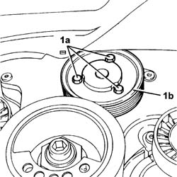

1088C22 water pump pulley - r r
- Path
- Procedures > 10 ENGINE > 1088 ENGINE COOLING > 1088C WATER PUMP AND THERMOSTAT > 1088C22 water pump pulley - r r
- Kind
- repair procedure (removal / refitting; the operation number is the code)
- Applies to
- engines: 3.0 V6, 3.2 V6; all production periods
- Interactive page
- https://sloeber94.github.io/elrnDB-lThss/en/#/189997
Applies to: engines: 3.0 V6, 3.2 V6; all production periods
 Removing
Removing
 Refitting
Refitting- Position the vehicle on a lift.
- Open the boot, remove the cover on the left hand side and disconnect the negative battery lead.
See in Op. 4450B04 Right FRONT WHEEL (one) - R.R.
- Raise the vehicle on the lift.
See in Op. 7055B64 Engine compartment DUST SEAL in front wheel arch (one), left or right - R.R.
See in Op. 7055B42 FRONT WHEEL ARCH LINER (one), left or right - R.R.
1. Loosen the bolts (1a) fixing the water pump pulley (1b).

Applies to: engines: 3.0 V6, 3.2 V6; all production periods
See in Op. 1092G10 Engine components single drive BELT - R.R.
- Completely undo the bolts and remove the water pump pulley.
Applies to: engines: 3.0 V6, 3.2 V6; all production periods
Refitting
Removing- Position the pulley and bring the fixing bolts close to it.
See in Op. 1092G10 Engine components single drive BELT - R.R.
- Tighten the bolts fixing the pulley to the recommended torque.
 | Value - daNm | Fastening | Component | Ø |
|---|---|---|---|---|
. | 0.9 | Bolt | WATER PUMP PULLEY | M6 |
See in Op. 7055B42 FRONT WHEEL ARCH LINER (one), left or right - R.R.
See in Op. 7055B64 Engine compartment DUST SEAL in front wheel arch (one), left or right - R.R.
- Lower the vehicle on the lift.
See in Op. 4450B04 Right FRONT WHEEL (one) - R.R.
- Connect the negative battery lead, then close the boot.
- Remove the vehicle from the lift.